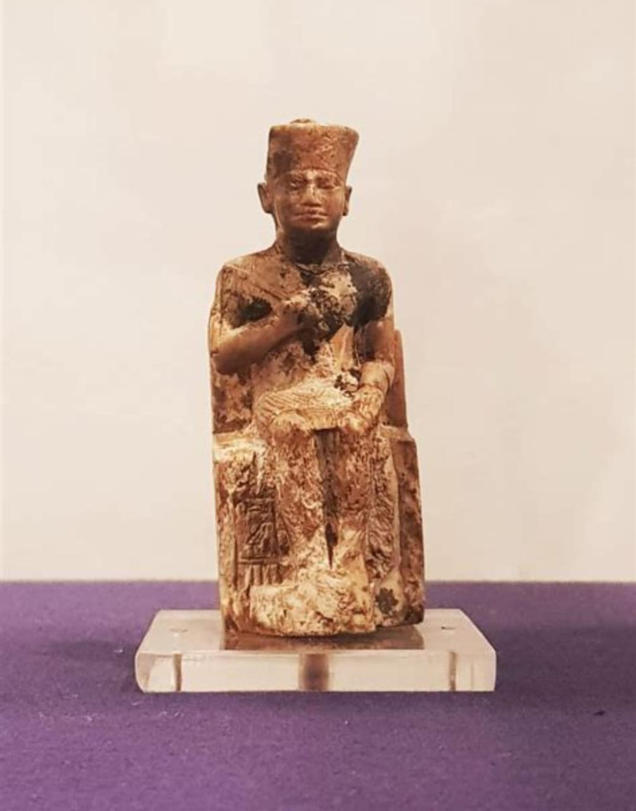

Discovery
Found in 1903 by Flinders Petrie at Abydos, Egypt.
Current Location:
Egyptian Museum, Cairo.
Details of the Statue
Material:
Ivory
Size:
7.5 cm (3 inches) tall
Appearance:
Depicts Khufu seated on a throne, wearing the nemes headdress.
Inscription:
His name (Khufu) is engraved on the throne’s base.
Significance
Only known statue of Pharaoh Khufu.
Provides insight into Old Kingdom royal art.
Raises questions about why no larger statues have been found.
